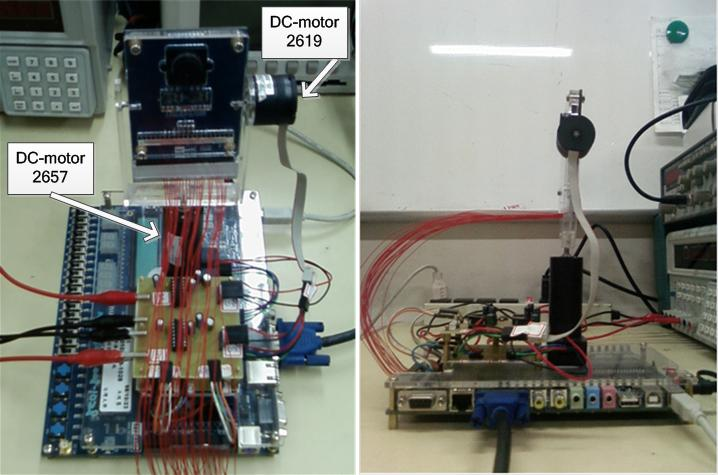

Design and Implementation FPGA based Embedded Visual Servo System
My graduate research is real-time scheduling of embedded system, which is based on a FPGA development board. In this face-tracking system, there are four tasks (processes):
(1.) One task to execute the image processing and locate the human face.
(2.) Two tasks to control the angle of DC-moter, both horizontally and vertically.
(3.) One task to record the related signal, such as motor's angle, speed, current and valtage.
In the field of control theory, there always has trade-off if system's computer power is limited. The purpose of this research is to plan an proper and compromised schedule, make sure all the tasks in the computer system work real-time and functionally.
and here is a simple demo of my experiment!